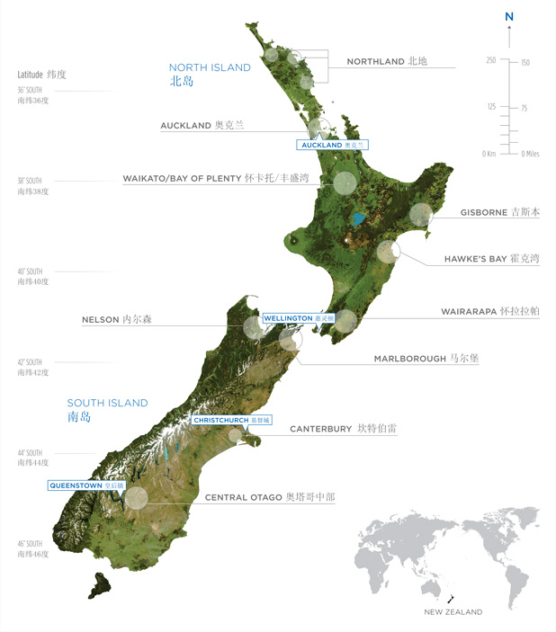

Responsive Image Maps jQuery Plugin
Download the plugin from github
p.s.灰色部分为锚；缩放浏览器可以看到效果；

Northland
Auckland
Waikato / Bay of Plenty
Gisborne
Hawke's Bay
Wairarapa
Nelson
Marlborough
Canterbury / Waipara
Central Otago
字体也是可以自适应的
Leadership
Education
Welfare
Reform
Language
& Culture
Individual &
Family Development
Employment
&
Economic
Opportunity
Recognition
& Reconciliation
Land Reform &
Home Ownership